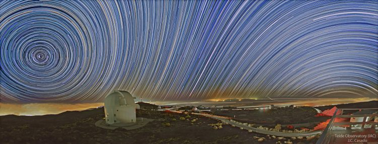
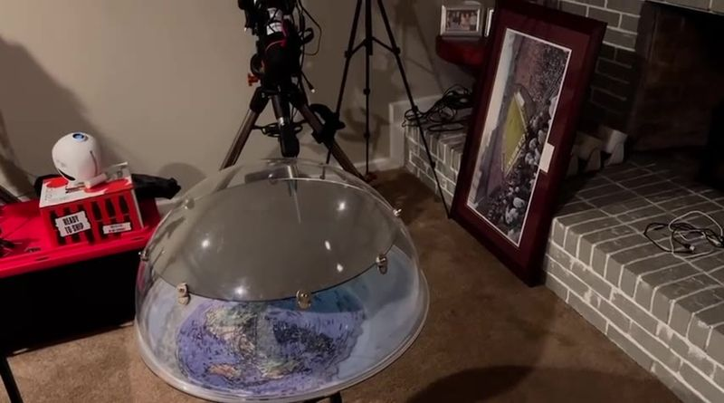
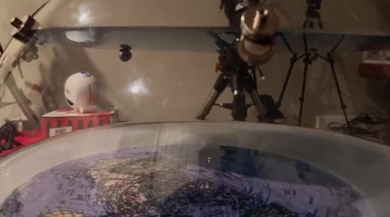
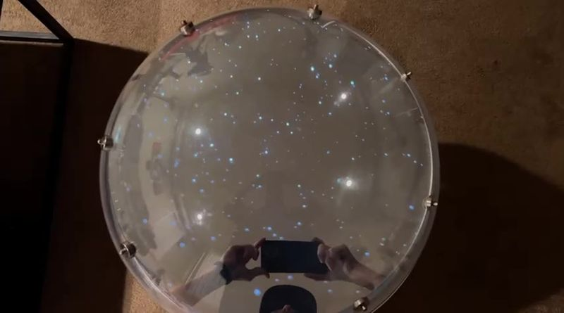
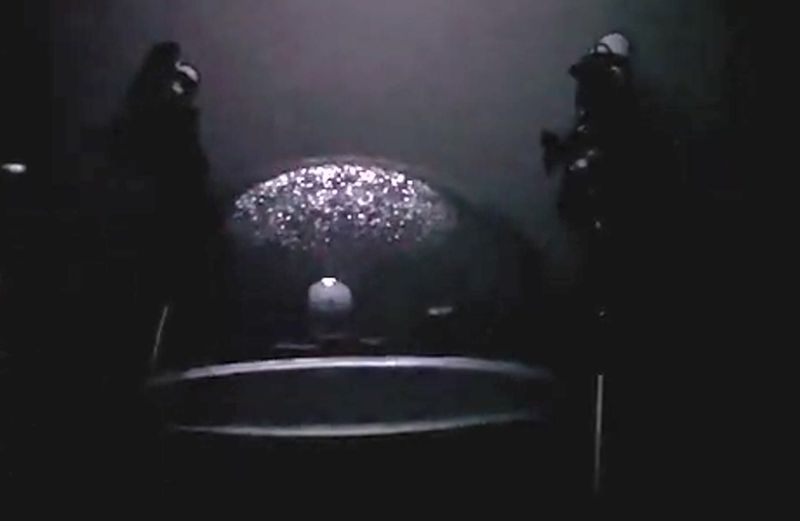
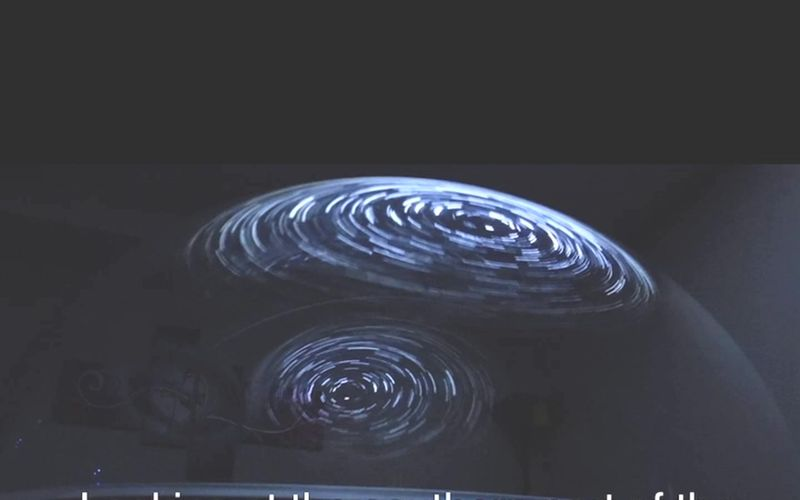
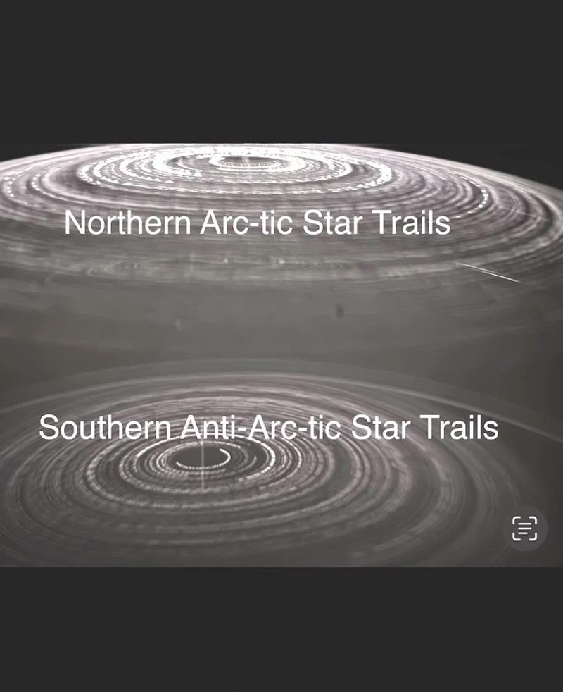
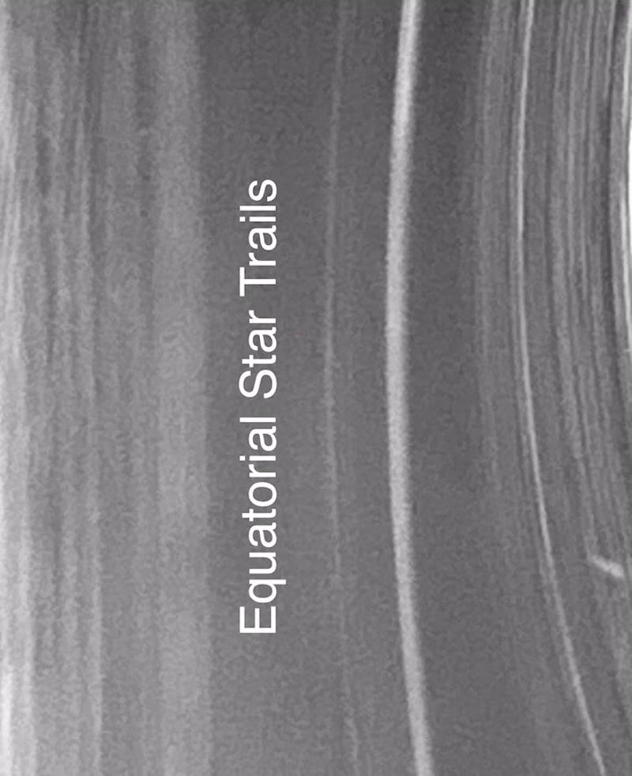
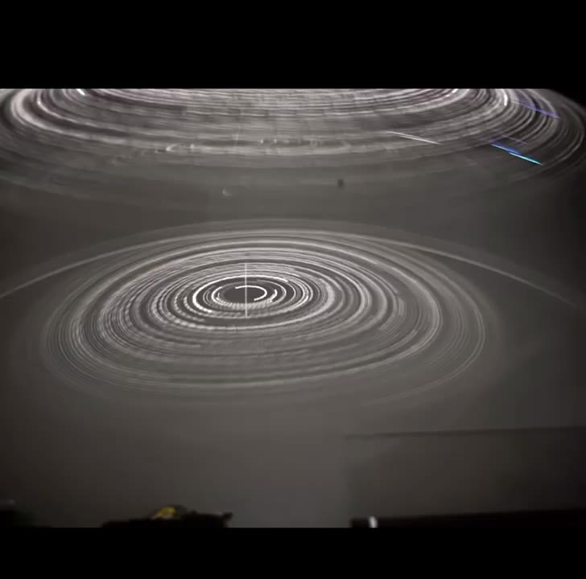
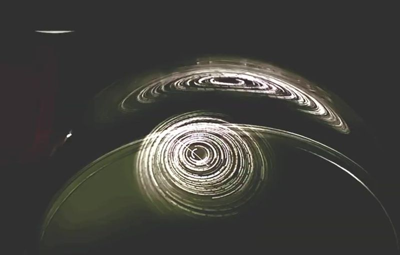

A flat-earth demo gets counter-rotating star trails by projecting two spinning light disks onto one dome and filming from outside. The trick is real, but it is a camera trick. The question that matters is what two disks look like from underneath, and whether they can ever produce the straight trails we photograph at the equator.
Both disks spin the same way. From outside you look at field A's back (through the dome shell) and at field B's front (the inside surface, seen across the dome). A rotation seen from behind is mirrored, so A appears to counter-rotate against B. Slide the camera inside the dome, where any observer on a flat plane would actually be, and both fields turn the same way.
A flat earther can skip the camera trick entirely and simply spin the second disk the other way. Press Reverse disk B to grant that. It fixes the direction, so counter-rotation on its own is not the problem. Tab 2 shows what is.
This is the whole sky seen from underneath, zenith in the centre, horizon at the rim (north up, east left, as on a star chart). Grow the radius and the two fields have to overlap. In the overlap you get two sets of trails crossing through each other, going opposite ways or the same way with opposite curvature. No photograph has ever shown that.
The real equatorial sky shows something two disks can never make: straight trails running east–west through the zenith, bending one way toward the north horizon and the other way toward the south. Press Globe sky to see what that takes: the second pole has to be the exact antipode of the first, which puts it below a flat earth, not on a dome above it.
"Keep the disks small, so they never overlap." Then each disk covers at most half the angular distance between the poles, and everything between them is a starless band. Yet Orion, Sirius and the whole zodiac are seen from both hemispheres on the same night. The stars they share are precisely the ones that must sit in both disks at once.

Turn to face north and the trails spiral anticlockwise around a point 28° above the horizon. Turn east and they run as nearly straight, tilted lines. Turn south and they bow the other way, around a pole that is 28° below the southern horizon. One axis, one rotation, seen from a tilted ball. Switch the model to Two disks, one centred over each pole of the flat earth, and grow the radius: the same tour shows what the dome version would have to look like instead.
A sphere drawn around you is a map of directions. Any radius will do, because a direction has no distance in it; that is why a planetarium works and why astronomers have drawn the celestial sphere for two thousand years. So one observer's personal sphere reproduces everything they see. Build a second one 954 km away and the same star is now marked in two places, because each sphere holds a copy of the direction, not the star. Expand the spheres: the two copies never meet. The rays do, at infinity, and that is where the star is as far as any pair of observers can tell.
The one thing the two spheres do not share is "up". Chicago's zenith and Washington's differ by 8.6°, and Polaris stands 3° higher over Chicago for exactly that reason: parallel direction, tilted horizons. On a flat plane every "up" is parallel, and both cities would put Polaris at the same altitude.
A sphere turning about an axis through its centre has two fixed points, not one. In each personal sphere the axis enters at the north celestial pole and exits at the south celestial pole, 40° below the southern horizon for these two cities and above it for anyone south of the equator. That second point is not optical. It is what rotating a sphere means. A single disk over the north has one fixed point and cannot produce it.
"The second pole is an optical effect of the observer's celestial sphere; the physical rotation is one disk around Polaris." Grant the sphere, it is a legitimate tool. Then switch on Stars ride on the sphere, which takes the claim literally: the stars are physically on Chicago's sphere. Washington now sees every star in a measurably different direction, and the readout gives the number. Real star positions agree between any two cities on Earth to a fraction of an arcsecond, which puts any physical sphere out past the orbit of Saturn on this baseline alone, and out to light-years once the Earth's orbit is used as the baseline.
Clips are short excerpts from the two videos linked under Sources, scaled down, with no cuts inside them; clips 3 and 4 have brightness, contrast and gamma lifted so the dots read on a page. Nothing is added or removed.









Sources. Joseph Hanvey, "Another perspective of Arc-tic and Anti-arctic Star Trails. The dome is the answer!" (23 Nov 2024, 2:08), "The reflective crystalline dome, and superfluid ceiling that is like a two way mirror is the answer." (12 Dec 2024, 7:59) and "The Anti-arc-tic 24 hour apparent Sun does work within the level earth enclosed universe model." (13 Dec 2024, 11:01). The three device stills are unaltered frames from the third video; the closing long exposure is an unaltered frame from the first. The dark-room still and the two long exposures are frames from the first video with brightness and gamma lifted so they read on a page; nothing is added or removed. Timestamps are given so anyone can check against the originals.
Three videos, one device. The first (23 November) has no mirror yet, "a singular rotating star field in the top of the dome", and his own narration gives the game away: "when I back out you see it looks like one star field, and it is one star field, rotating one direction; but when you come in, the way the dome manipulates the light, you see it's separate and you get an anti-motion." The two December videos add the mirror. A clear acrylic dome over a printed flat-earth map, a two-way mirror disk held by magnets inside it (near the top on 13 December, lower on 12 December), and a lens-type star projector outside the dome on a box, below the dome's base, pointing almost straight up (13 Dec, 7:20); on 12 December it stands further back, "between the telescopes" (0:39). Its cone paints one star field on the ceiling and never touches the dome. Everything that appears "on" the dome is that ceiling, either seen through the clear cap or seen in a mirror. Looking down into the dome there are two mirrors: the two-way mirror, which returns about half the light and is the bright field in every top-down shot, and the acrylic's convex outer surface, which returns about four per cent, shrinks what it reflects, and shows only in long exposures and in close-ups where it is inches from the lens. In his close-ups the phone is below the mirror and looking up at the dome, and then the sharp field is the ceiling after two bounces, off the mirror and off the inside of the far wall, coming back down over the mirror's near edge; the convex outer surface adds the soft one. Optical flow on the raw frames settles which is which: at 3:09–3:13 the near soft field turns at −2°/s and the far sharp field at +5°/s (opposite ways), with the straight-down mirror view at 1:24–1:31 as the control at −7.8°/s. Each bounce flips the turn, so one bounce turns against the ceiling and two turn with it; the field that turns the ceiling's own way is the two-bounce one. The pole sits at the centre of the straight-down disk, so the projector's axis crosses the ceiling over the dome. (The inside of the cap adds a third, faint copy. Ceiling light that reaches it directly goes to the map and never comes out; but light that has already come off the mirror and is on its way out meets the inside of the cap, about four per cent of it comes back down, bounces off the mirror a second time and leaves. The model traces that path and finds it from every camera position: about one per cent of the ceiling's light, the whole lit room squeezed into the middle of the mirror disk and turned through 180°, drawn in amber.) At 9:17 on 13 December he films straight down and calls the dome "the single star field stretched across the whole round": his own hands and phone are reflected in it beside the stars, and the stars are missing where his body blocks the ceiling. A reflection of the ceiling behaves exactly that way; light painted on the glass would not.
Every reflection is a copy of the one field, reversed, seen from the opposite side. The ceiling is seen from below; its images in the dome are seen from above. So the ceiling and any of its reflections turn opposite ways on screen, and two reflections turn the same way as each other. In his close-ups the two reflections sit one above the other, the glass image over the mirror image, and where they meet at the mirror's rim the lower edge of one sweeps one way while the upper edge of the other sweeps the other, like two gears turning the same way where their teeth touch. That seam is what he calls the equator, and the shear across it is what he calls arc and anti-arc. His 6:44 "Equatorial Star Trails" still is a hard zoom on that seam turned through 90°, and the trails in it are still nested arcs. The readout labels each copy "direct" or "reflected", and the reflections move with the camera because reflections do, which is his "it follows no matter where you go".
The storyboard above the picture walks his shots in order, each with a short clip from the video beside the model set to the same view. In that mode the model is drawn the way his phone sees the room: black, white pins, the near cap reflection blurred into discs because the phone focuses on the mirror image further in, the mirror's pins sharp. The two pictures are meant to be compared directly; untick Match the footage to get the labelled, coloured version back. The seam arrows are measured: the model moves the projector a few degrees, finds where the cap reflection and the mirror reflection went on screen just above and just below the mirror's top edge, and draws the result. Which way each turns depends on where the camera is, so the readout says what it sees rather than asserting a sense; what never changes is that the two reflections agree with each other and disagree with the ceiling. The gauge on the left tracks the camera's height. Above the mirror plane, where every one of his dual-spiral shots is taken, the mirror shows the ceiling; below it, as at 6:58 on 13 December, the mirror shows the map and the room and the second spiral is gone. His southern sky exists only for a camera floating above the mirror looking down. The Ghost toggle draws what the mirror would give a fully starred dome: the image of the part of the dome above the mirror, hanging below it. With the mirror this high that is a shallow slice, not a southern hemisphere; a full lower half needs the mirror at the base, and either way the one place an observer could stand to see both halves is on the mirror itself, looking down through the floor at a Dipper whose handle bends the wrong way.
The sliders also let the projector's cone reach the dome, in which case beams light the glass directly and bounce off the mirror; those copies are drawn in white and the readout reports them. On his settings they are empty. Switch the mirror off and its image vanishes; switch the outer-surface reflection off and the dome goes dark. What remains is a ceiling and a projector.
The projector carries a Dipper-shaped asterism so the mirrored copy can be checked by eye: the handle bends the other way. Orion photographed from Australia is Orion turned upside down, belt and sword in the same order as from Europe: a rotation, not a reflection. The southern sky also contains stars with no northern counterpart at all. A mirror cannot produce either.
Press Two rays to the pole (side view). The phone sits above the mirror's plane, where every one of his two-spiral shots is taken. From there the ceiling's pole reaches it two ways. A: off the top of the two-way mirror, one bounce, the image a long way below the floor, so it is sharp when the phone focuses deep, and it is confined to the disk's rim on screen. B: off the outer surface of the cap, one bounce, the image just behind the glass, so it is soft when the phone is inches from it, and its copy of the pole lands on the far slope of the cap, just above the rim. C, the inside of the far wall, cannot do it in one bounce: ceiling light that reaches it goes to the map. It can in three. Light that has come off the mirror and is on its way out meets the inside of the cap; four per cent of it comes back down, meets the mirror again and leaves, and the model traces that path and finds it everywhere. It is a concave mirror's picture of the whole lit room, the person holding the phone included, about one per cent as bright as the ceiling, squeezed into the middle of the disk; and a concave mirror turns its picture through 180°. Three bounces give the same handedness as one, so this amber copy turns the same way as the mirror's and the glass's, but its meteor runs the opposite way. A flat pane beyond the dome, such as the glass of the framed print by the fireplace, reflects the room as well (tick Picture glass); it reverses the meteor only if it faces along the room's long axis, and where it stands it faces the dome, so its copy runs the meteor the same way as the mirror's. So looking down into the dome there are three copies, the mirror, the glass and the mirror's second bounce off the inside of the cap; looking up at it from below the mirror, as in Bright A, there is the glass and the same mirror-and-wall copy with one bounce fewer: two bounces, coming back down over the mirror's near edge, turning the ceiling's own way.
One bounce each means the same handedness. A rotation alone cannot show that, because which way it turns depends on which side you view it from; a streak with a head and a tail can. His projector fires a meteor every few seconds, from the pole outward toward the projector's side of the room, and it is drawn here in every copy of the field. In two one-bounce copies it leaves both poles the same way and both copies turn the same way; in a direct view against a reflection it would not. Looking straight down (12 Dec 1:29, 13 Dec 9:16) the field turns anticlockwise and the meteor runs from the centre toward the projector; in the mirror and in the glass it does the same. The amber inner-wall copy is the test case for the rule: three bounces, same turn, but a picture turned through 180°, so its meteor runs the other way while the field still turns the same way. Bright A is the other case: there the far field turns against the near one, measured on the footage; one bounce against two, and the concave wall turns the two-bounce picture over, so its meteor runs the other way from the glass copy's. The readout under each clip measures all of it on screen. Two reflections, same way round, their poles on either side of the rim, so their edges pass each other along it: that shear is his counter-rotation.
Tab 1's trick is one rotation seen from two sides. In his rig the two sides are the ceiling itself, which you see from below, and any reflection of it, which you see from above. Press 5 · Under the mirror: the ceiling field is in the top of the frame, its reflection in the dome's cap below it, and the readout gives them opposite senses. That pair is the "two counter-rotating disks": same field, same spin, one of them in a mirror. Bright A is the same pair, closer. Press 3 and watch him walk in: he drops the phone below the top of the dome and looks up through the cap, and one patch of light becomes a soft near layer and a sharp far layer. The near one is the cap's convex reflection (its virtual image sits just behind the glass, so a phone focused deeper blurs it) and turns anticlockwise; the far one is the ceiling after two bounces, off the mirror and off the inside of the far wall, with the map showing through it, and turns clockwise. Looking straight down on the dome (12 Dec 1:29, 13 Dec 9:17) the mirror's copy turns anticlockwise, which is the same rule from the other side: each bounce flips the turn, so one bounce turns against the ceiling and two turn with it, and the ceiling itself turns clockwise seen from below. The model's spin is set to match, and the argument does not depend on the sign. The seam between the two in his close-ups is the mirror's rim and the edge of the cap, and in a crop on the seam that is all you see. The counter-rotation in his long-exposure stills is typed on them: a still has no arrowheads, and "Counter clockwise Northern" and "Clockwise Southern" are his captions, not the picture. Tab 2's point survives either way: two separate spiral centres in one sky, whichever way they turn, leave a seam of straight, oppositely bowing or colliding trails between them, and that is exactly what his "Equatorial Star Trails" crop shows. The real equator has no seam because the real sky has one axis, and its two poles are the two ends of it.
In his own words, three weeks before the mirror went in: "it is one star field, rotating one direction; when you come in, the way the dome manipulates the light, you get an anti-motion." That is this page's case, and his. The rest is the claim that the room is the world. "The two-way mirror stands in for the superfluid ceiling; the real sky reflects the luminaries the same way." Grant it, and follow the geometry. A mirror lying flat above you reflects what is below it. For it to show you reflected stars, the stars must hang between you and the mirror, and then every star has a twin directly above it in the sky, the real one and its reflection, both visible at once. No star has a twin. Tilt the mirror instead, to throw the north's reflection into the south, and the reflection's position depends on where you stand, which he demonstrates himself: "it follows no matter where you go." The south celestial pole does not follow anyone. It sits at a fixed bearing, at an altitude set only by latitude, for every observer at once.